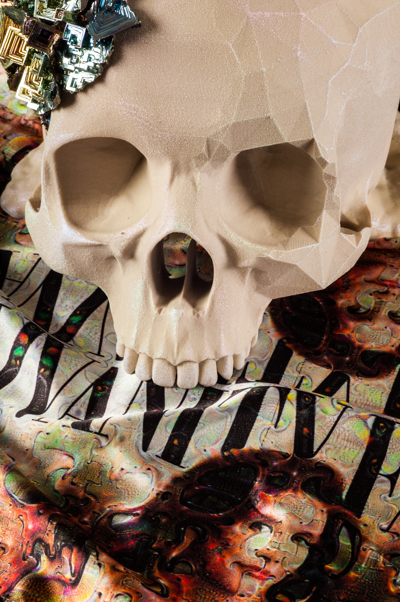
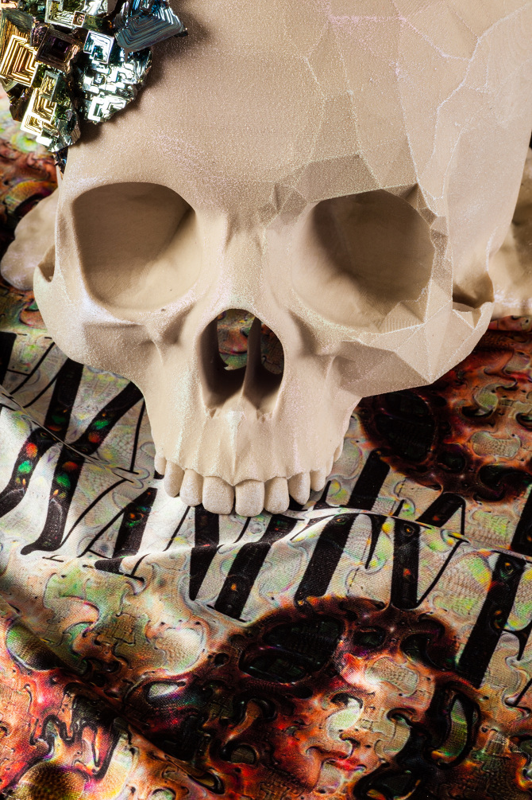
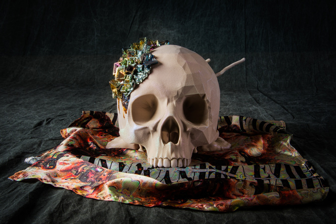
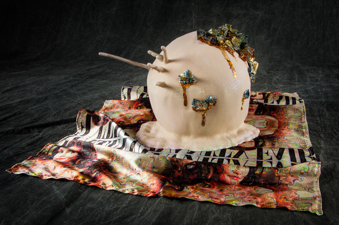
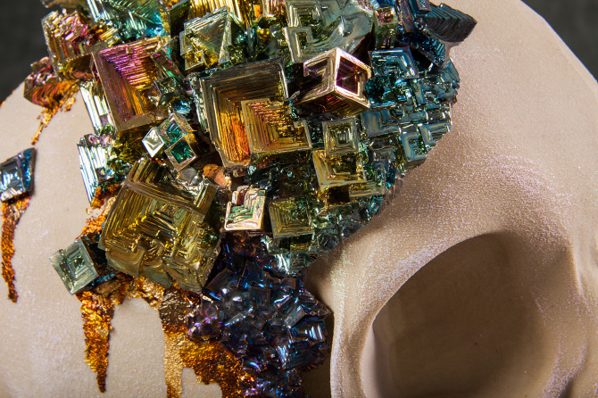

Mutatis Mutandis and the Program for Self Anamorphosis
Our bodies are our first homes, but learning to see the water around our wetware takes a pivot in perspective. Ask Lana. Ask Lilly. This work is a call for a trans*-futurism. It is a call to stalk the leaky, smoking wreckage of Americana and take from the genetic designers what is useful to us, to creep from the kipple and climb the pyramid towers of medicine to gouge out the eyes of the makers who withhold life from us. This is not about healing trauma, it is about the theft of fires Promethean and their strategic relocation. With them we can burn away the parts of ourselves that no longer serve us. Not because we're broken, but because we have seen deeply into the virtual and we have the audacity to act. What does one do with this fresh perspective? Rest assured. We're all replicants whether we recognize it or not.
Video walk-through of an explorable virtual environment created from a hacked level within the PC game Vampire: the Masquerade - Bloodlines. The environment is an approximate recreation of the Bradbury building as depicted in the movie Bladerunner.





3d printed skull, pearlescent paint, bismuth crystals, polyester satin custom printed with
Caitlyn Jenner's Vanity Fair cover fed through Google Deep Dream. Approx. 11" x 8" x 8"
(Photos courtesy of
Rachel Wolf)
(Special Thanks to Psycho-A, and Wesp5 whose work on the Bloodlines SDK made this mod
possible.)